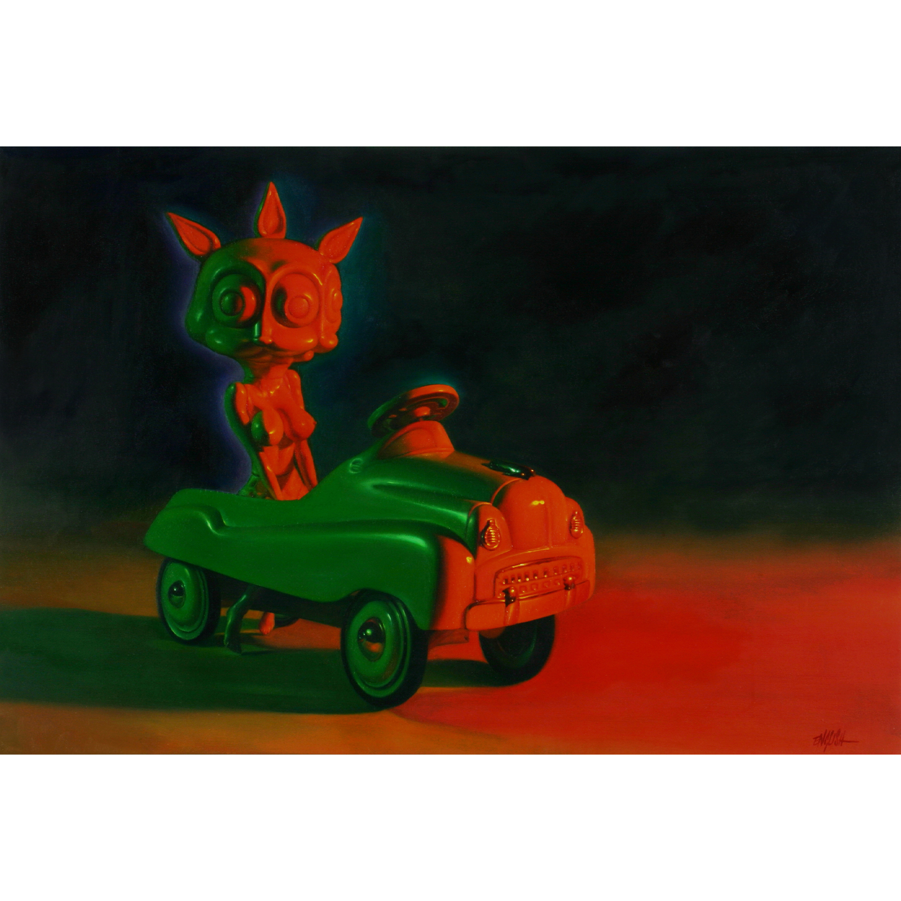
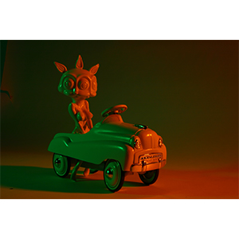

Exhibitions
The ADAM and RON Show, Elms Lesters Painting Rooms, London, United Kingdom, May 4–31, 2008.
Literature
Ron English, Abject Expressionism: The Art of Ron English (San Francisco: Last Gasp, 2002), p. 40. ISBN 978-0867196894.
